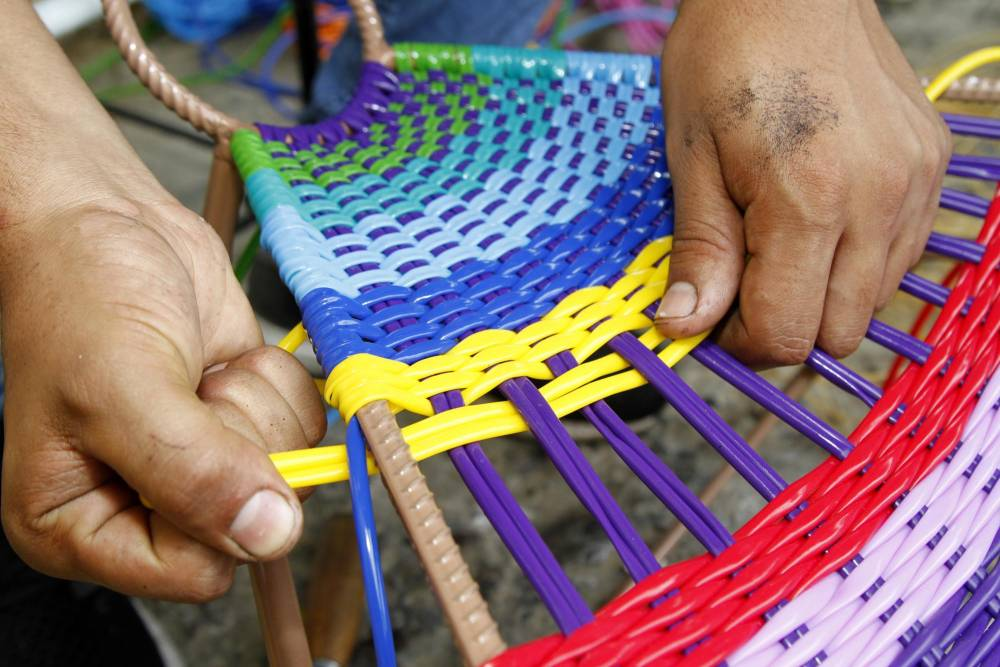

Un gruoo de jovenes artistas con pasion a diseñar, crear y tejer las sillas y mesas tradicionales iconicas de Bucaramanga y Colombia.
 Una inversion independiente que nacio de hace 50 años y que ahora ha pasado de generaciones consigo el profesionalismo y conocimiento del mercado.
Una inversion independiente que nacio de hace 50 años y que ahora ha pasado de generaciones consigo el profesionalismo y conocimiento del mercado.
El proceso desde cero, desde diseñar una obejeto como lo puede ser una silla, mesa o maseta hasta el el proceso final como lo puede ser tejer y en embalar el producto. Arranca cuando los dedicados trabajadores forjan y sueldan una serie de varillas de hierro sobre las que los artesanos, posteriormente, tejerán sus telarañas multicolor.

Los hierros puestos al rojo vivo son pulidos de manera minuciosa para que quienes deseen tomar un descanso sobre ellas lo hagan de forma cómoda, pero también segura. En los detalles radica la perfección de estos artistas.

En pleno corazón del Bulevar Santander, afuera de una casa de amplios ventanales y puertas con forma de arcos, llama la atención a los ojos un grupo de artesanos que tejen sillas coloridas, de varios tamaños y con llamativos estilos.
Edymar Mendoza, la administradora de este local comercial, narró como en el año 1967, don Elías Conteras comenzó tejiendo sus primeras sillas que, a hoy, ya completan más de tres generaciones que conservan esta tradición.
El arte de tejer mimbre se remonta a la época de los egipcios, quienes fueron los que popularizaron esta técnica y la transmitieron a romanos y estos últimos la difundieron a lo largo de toda Europa.
Es común encontrar en muchos hogares santandereanos las sillas, sobre todo mecedoras, tejidas en mimbre plástico. Estos artículos tienen tejidos de distintas figuras geométricas y lo que más llama la atención son sus vistosos colores.
Por su parte, Nélson Fernández, uno de los más veteranos trabajadores del mimbre, en sus 35 años de labor, se especializó en la fabricación de sillas de madera, que se conocen como Momposinas.
El mimbre plástico es traído desde Cúcuta a Bucaramanga. La gama de colores va desde los tradicionales blanco y negro hasta los atrevidos tonos neón y los rosado y azúl, que prefieren los niños.